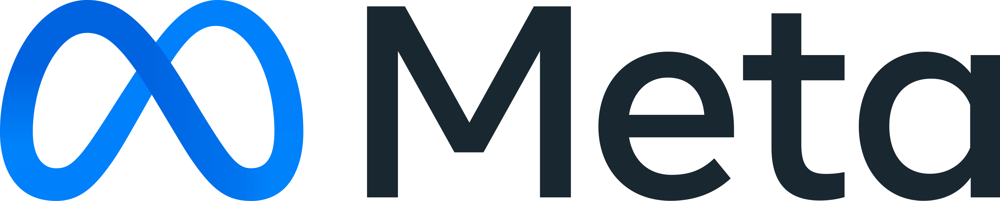
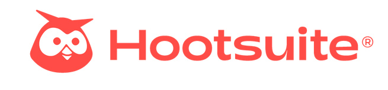
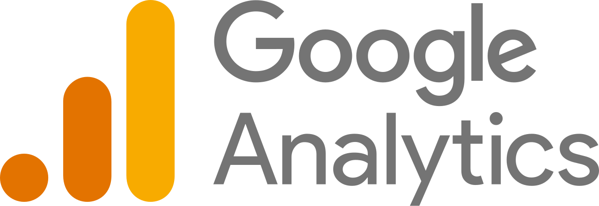
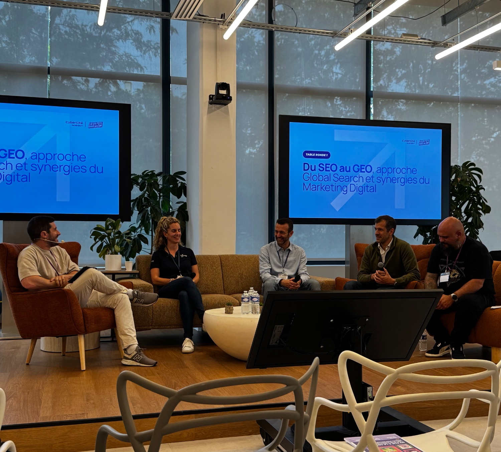
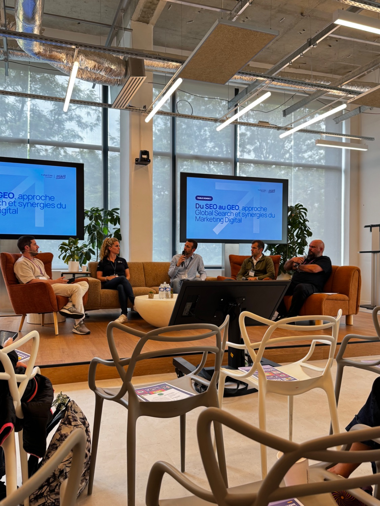
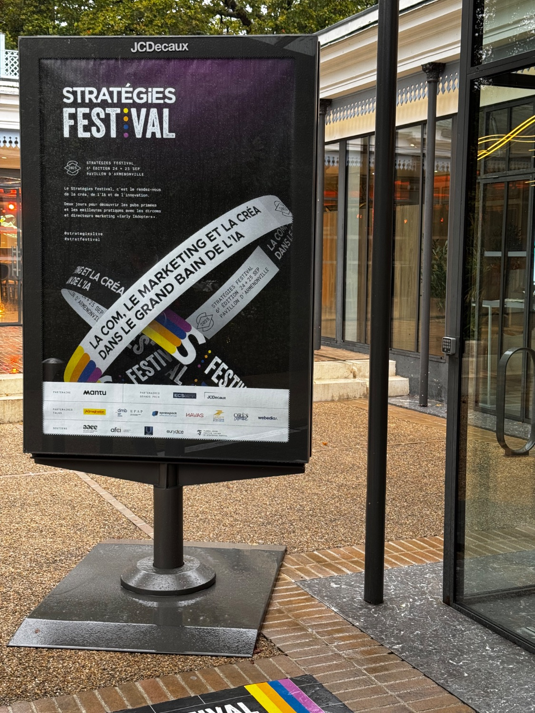
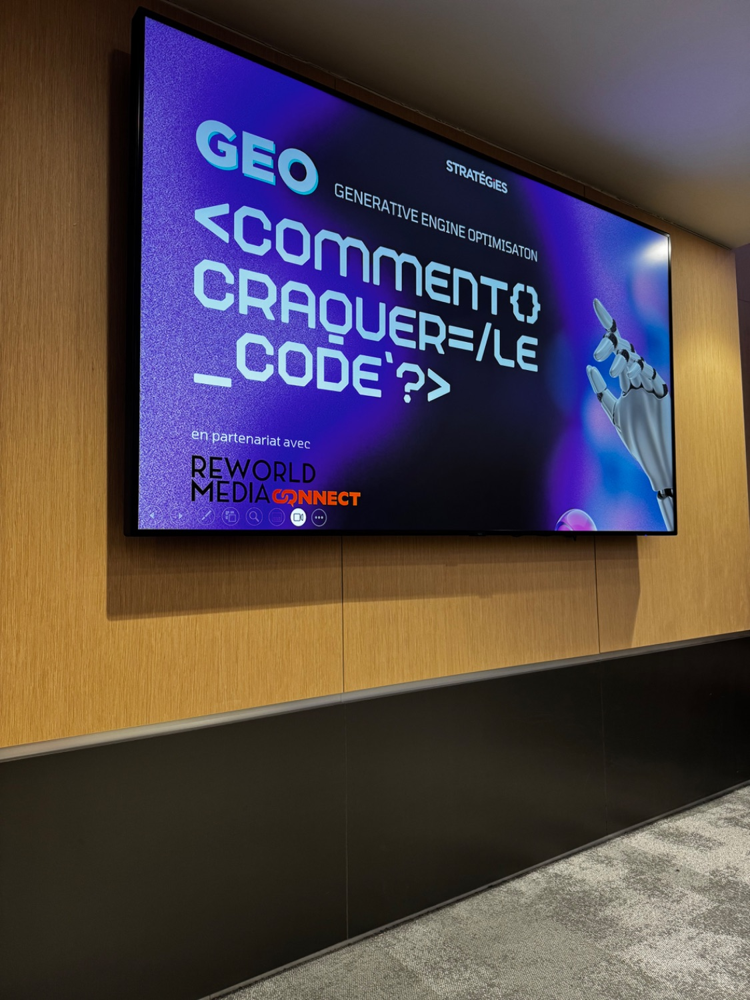
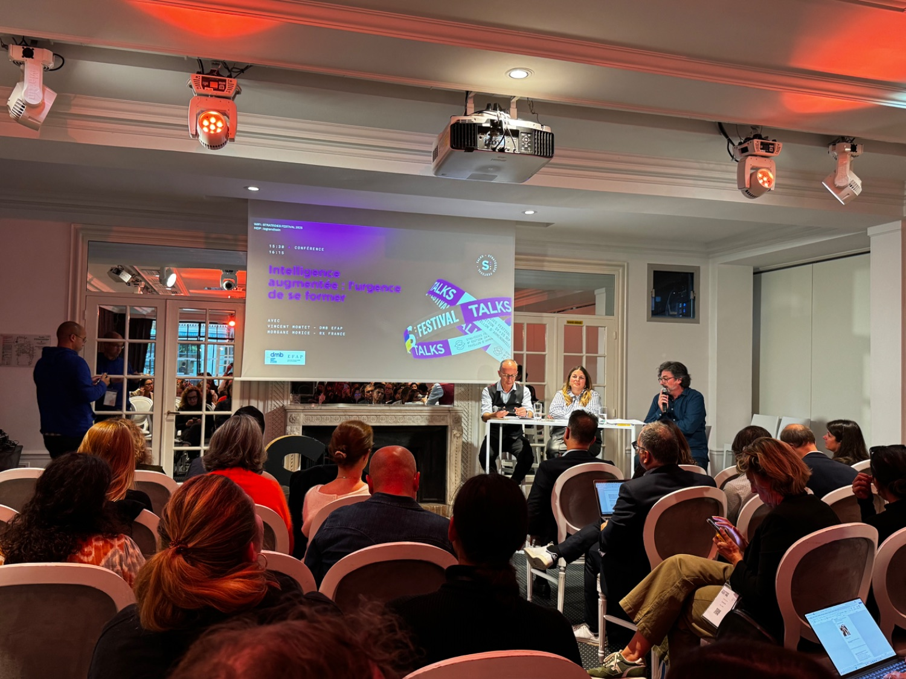
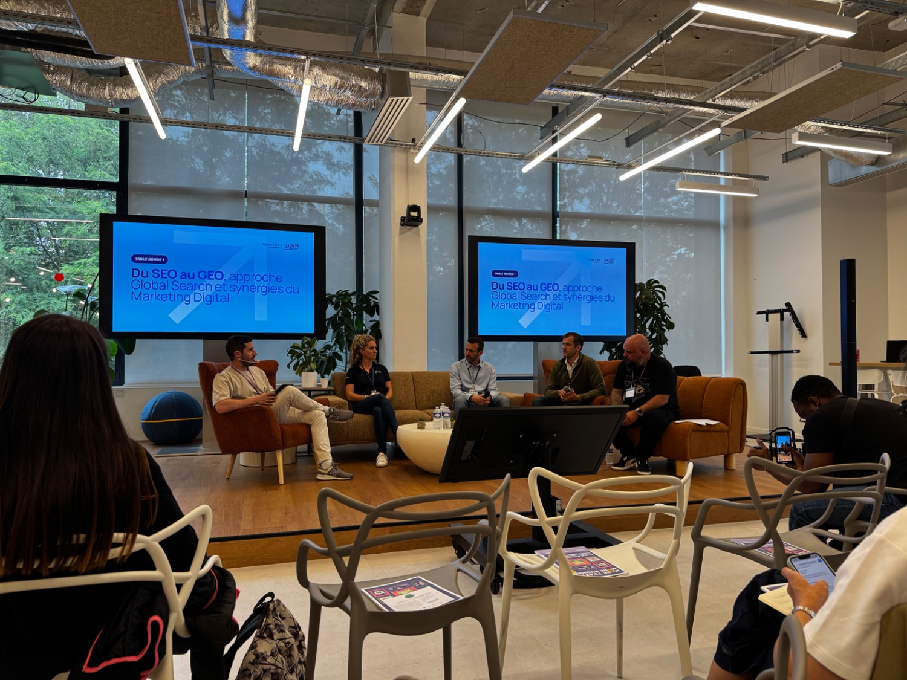

Création & production
De l'idée au format publié : concepts éditoriaux, écriture, design et montage vidéo pour des contenus pensés pour leur audience.
Social Media Manager
Je fais grandir les communautés des grandes marques - du concept créatif à la performance mesurée.

01 Performances
Audience cumulée sur les réseaux de SANEF - production 100 % organique, sans budget publicitaire. Le détail par plateforme :
Boîte à outils
Création & production
 Photoshop
PhotoshopPilotage & analytics

Meta Business Suite
Hootsuite
Google AnalyticsIA & workflow
02 Réalisations
Chaque visuel est présenté tel qu'il apparaît dans son application, avec ses métriques réelles. Glisse les mockups ou navigue avec les flèches.
↗ Polyvalence
Je relie la création, le web et la performance sur une même chaîne : concevoir un contenu, le mettre en ligne proprement et le piloter par la data.
De l'idée au format publié : concepts éditoriaux, écriture, design et montage vidéo pour des contenus pensés pour leur audience.
Intégration sur le site corporate SANEF : refonte de la FAQ et des pages « aires de service & de repos ». Création et fusion de pages, contenus FR & EN, publication, dépublication et redirections d'URL.
Lecture des résultats pour décider : analyse des audiences, suivi des KPIs et ajustements continus de la stratégie de contenu.
03 Veille & IA
Tester, analyser, recommencer. Je reste en veille active sur l'IA, le social media et le marketing digital - par les outils que j'expérimente, les newsletters que je décortique et les conférences qui nourrissent ma pratique au quotidien.
L'IA fait partie de ma façon de travailler : je teste les nouveaux outils, je les compare et j'intègre les plus pertinents à ma production de contenus.
Je m'abonne, je teste et je décortique les meilleures newsletters social media, marketing et IA pour garder une longueur d'avance sur les tendances.
Je me nourris régulièrement sur le terrain : conférences, tables rondes et festivals où se dessinent les pratiques de demain - du SEO au GEO, de la data à l'IA générative.






04 Parcours
À l'issue de mon Mastère, je recherche un poste de Social Media Manager ou Chargé de communication digitale pour continuer à faire grandir des marques et leurs communautés.
Me contacterPilotage de la ligne éditoriale sur 5 réseaux : conception de concepts créatifs, production et programmation des contenus, animation et modération des communautés, puis analyse des performances pour optimiser la stratégie.
Production de contenus digitaux et animation des réseaux sociaux pour accompagner la communication de la marque et renforcer le lien avec ses publics.
Formation spécialisée en stratégie de marque, marketing digital, communication et événementiel - menée en alternance sur deux ans.
05 Contact
Une opportunité, une question, ou simplement l'envie d'échanger ? Écris-moi via le formulaire, ou en direct.